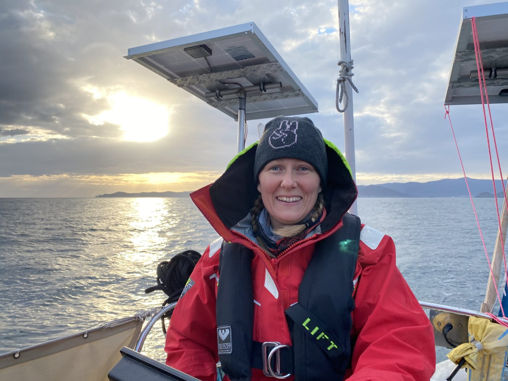
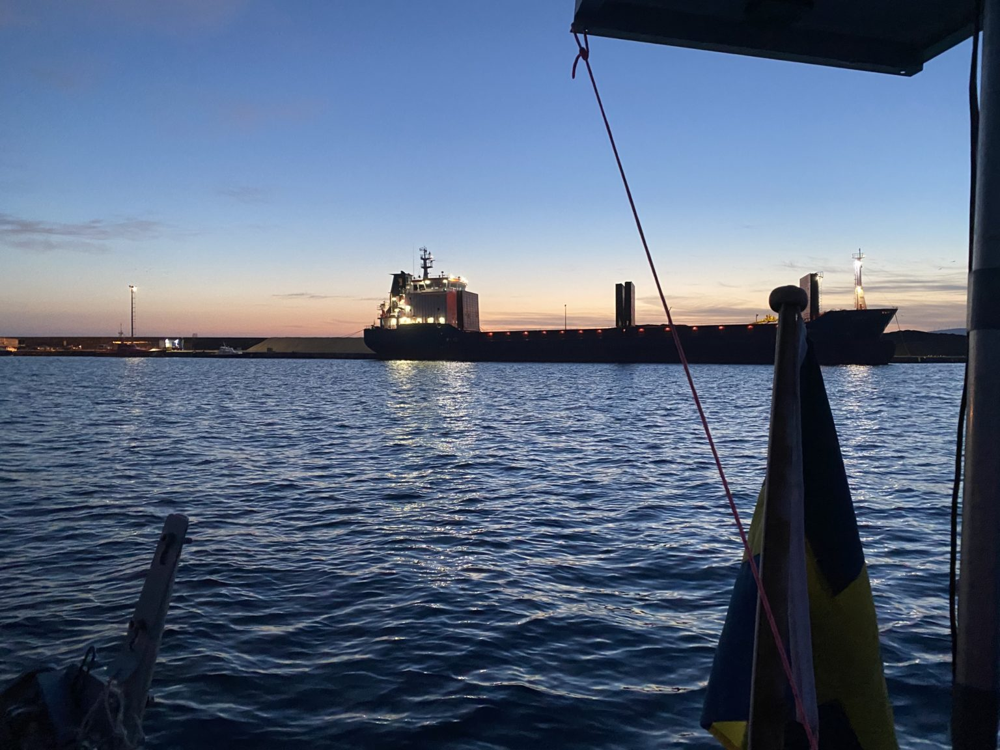

We headed for Cedeira but ended up in Carino
Senast uppdaterad:
At 7:30 on the 2nd of March we left the protected harbour in Viveiro and headed out for the open sea again.

Happy to be on our way again
The plan for the day was to go to Cedeira, an achorage half way to A Coruña that should be really nice. The day was quite grey and depressing and a little bit colder than what was comfortable. When there was about 13 nm left to get to Cedeira and we found ourselves having to beat against the wind the rest of the way not knowing how long it would take to get there we decided to turn around and head back a bit and anchor in Cariño instead.

The planned route was to Cedeira but we decided to turn around and go back and anchor in Cariño instead
According to the plotter it was 5 nm to Cariño but it took us almost two hours. At first when we turned around we got really good speed but after a short while we had to beat against the wind in that direction as well. The wind behaves at bit strange around the mountains and the quite narrow rias. One thing we noticed was that the gusts suddenly came from another direction than the primary wind and that was quite annoying and made the sailing a bit unpredictable. However in the early afternoon we entered behind the breakwater and found a place to drop the anchor. We haven’t anchored a lot yet so we like to get to an anchorage early in the day so that we have a lot of time to get a feeling of how well the anchor holds and what impact the tide has.
 This big one came in at around 2 am and yes it was difficult not to notice